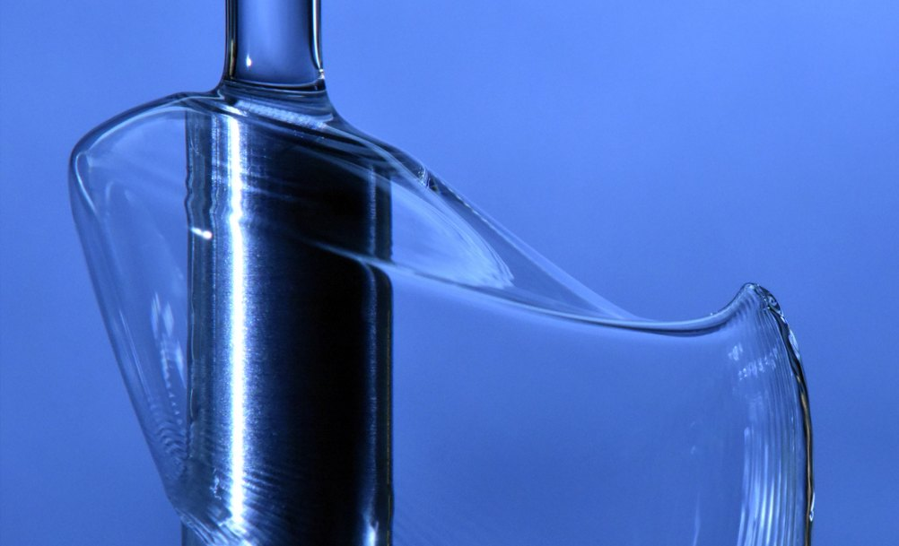
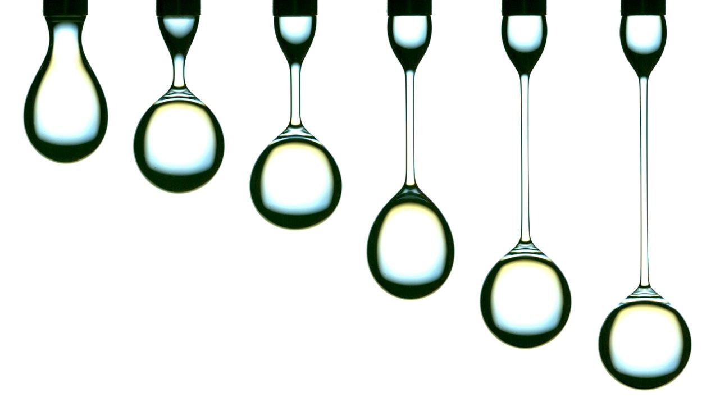
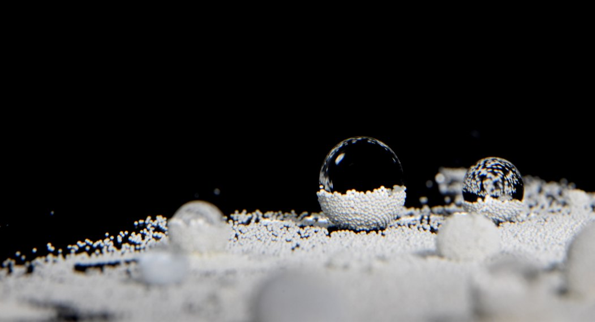
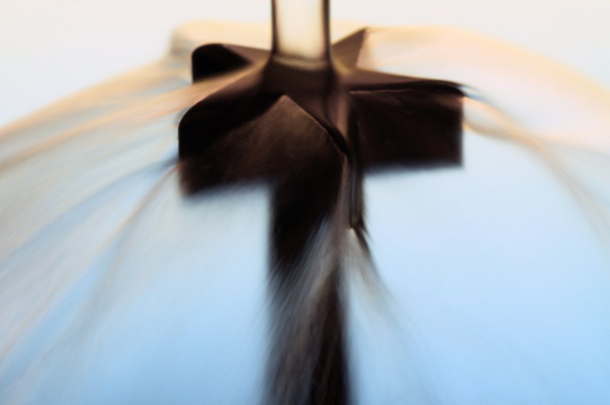

Research
Our research is motivated by the societal need to understand the physics of interfacial flow in multiphase and complex media. Through a combination of careful experimentation and rigorous analysis, we investigate fundamental problems with broad implications, including industrial processes such as heat and mass transfer, the behavior of natural phenomena, and the design of systems for controlled fluid motion.
Research Themes

Interfacial Phenomena
At small scales, surface tension takes over. It pulls jets apart into drops, lets droplets bounce on thin cushions of air, and stretches liquid into delicate sheets and bells. We use precision experiments and high-speed imaging to understand how liquid interfaces form, deform, and break, knowledge that underpins technologies from inkjet printing and coating to spray cooling.

Complex Fluids
Many of the liquids that matter most, from polymer solutions and paints to biological fluids and slurries, do not flow like water. Their viscosity can change with how fast they flow, and they can stretch and recoil like elastic solids. We study how these properties reshape familiar flows such as drop pinch-off, film coating, and flow down fibers, and build models that predict their behavior.

Granular Matter
Collections of grains can pour like a liquid, jam like a solid, or armor a liquid surface as a floating raft. We investigate what happens where granular materials and liquids meet: spheres striking particle-laden surfaces, drops coated in beads, and grain layers that buckle and collapse. These studies inform particle capture, filtration, and new approaches to environmental remediation.

Fluid-Structure Interactions
When a liquid strikes, wraps around, or flows along a solid, the shape of the structure steers the flow, and the flow can push back on the structure. We study these two-way couplings at the capillary scale, from jets shaped by targets of different geometries to fibers and soft surfaces that guide and respond to liquids, with the goal of designing surfaces and devices that control liquid motion.
Current projects
-
Drop–bath impacts
We investigate how the surrounding gas influences the impact dynamics of submillimeter drops on a liquid bath. Using a vacuum chamber, we systematically vary the gas type and pressure to examine transitions between coalescence, bouncing, and transient floating. Experimental results are directly compared with a computational model that captures air-layer evolution through a lubrication framework incorporating nanoscale gas kinetic effects and disjoining pressure.
-
Water entry
A solid sphere impacting a quiescent bath can form an air cavity whose evolution depends on the impact conditions and sphere wettability. This project investigates how modifying the bath surface, either through active deformation or coating the surface with a secondary medium, affects cavity dynamics and can dramatically alter the physical mechanisms governing cavity closure.
-
Liquid sheets and bells
We study the formation, breakup, and stability of axisymmetric liquid sheets and bell-like structures generated by the impact of a liquid jet on a small target. Our research focuses on how the geometry of the impactor controls the dynamics and stability of the resulting sheet, and how the two-way coupling between fluid ejection and solid shape can be harnessed to manipulate liquid flows and design responsive, force-generating surfaces.
-
Controlling granular interfaces
An interface coated with a monolayer of granular particles exhibits a range of useful mechanical properties. In this project, we use a variety of probes to mechanically manipulate the granular interface by imposing local interfacial height gradients. The ability to perforate these interfaces is tested as a new method for modifying local particle concentrations—a potential route for tailoring overall interfacial properties.
-
Aerodynamic effects on bead-on-fiber flow
Building on our previous work on the dynamics and morphology of liquid bead-on-fiber flows, we are investigating their potential in heat and mass transfer applications. Using a custom wind column, we explore how a counterflow alters the propagation and properties of bead patterns. These flow modifications are then evaluated for their implications in using bead-on-fiber systems for particle scrubbing.
Past projects
- Drop rebound
- Morphology and dynamics of liquid bead-on-fiber patterns
- Capillary phenomena in liquid flowing down fiber pairs
- Particle capture via dip coating of viscous and non-Newtonian solutions
- Particle capture using bead-on-fiber flow
- Microfluidics: electrophoresis of microparticles and electrokinetic flow instabilities
- Particle-laden interface dynamics and stability